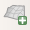

19.2.3. The 3D Map Item
The 3D Map item is used to display a 3D map view. Use the  Add 3D Map button, and follow items creation instructions to add a new 3D Map item that you can later manipulate the same way as demonstrated in Interacting with layout items.
{kind=link}
By default, a new 3D Map item is empty. You can set the properties of the 3D view and customize it in the Item Properties panel. In addition to the common properties, this feature has the following functionalities (Fig. 19.22):

Fig. 19.22 3D Map Item Properties
19.2.3.1. Scene settings
Press Copy Settings from a 3D View… to choose the 3D map view to display.
The 3D map view is rendered with its current configuration (layers, terrain, lights, camera position and angle…).
19.2.3.2. Camera pose
Center X sets the X coordinate of the point the camera is pointing at
Center Y sets the Y coordinate of the point the camera is pointing at
Center Z sets the Z coordinate of the point the camera is pointing at
Distance sets the distance from the camera center to the point the camera is pointing at
Pitch sets the rotation of the camera around the X-axis (vertical rotation). Values from 0 to 360 (degrees). 0°: terrain seen straight from above; 90°: horizontal (from the side); 180°: straight from below; 270°: horizontal, upside down; 360°: straight from above.
Heading sets the rotation of the camera around the Y-axis (horizontal rotation - 0 to 360 degrees). 0°/360°: north; 90°: west; 180°: south; 270°: east.
The Set from a 3D View… pull-down menu lets you populate the items with the parameters of a 3D View.